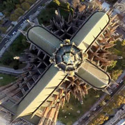

Se la conoce también como la Ciudad “de los tilos”-por su gran cantidad de árboles de esa especie-, y “de los estudiantes” por sus universidades e institutos terciarios públicos y privados. Además, al ser capital de la Provincia, es sede de Colegios Profesionales y organismos del Estado.
En su “Cuadrado Perfecto” cuenta con 23 parques y plazas, incluido un gran pulmón verde conocido como Paseo del Bosque. Contiene además una variadisima cantidad de especies arbóreas que embellecen las distintas calles como tilos, plátanos, jacarandás y naranjos plantados para ayudar a la orientación a personas con discapacidad visual. Y en la medida en que uno se aleja del centro podrá percibir el canto de estorninos, carpinteros, horneros, cotorras y zorzales.
Capital planificada
La Plata fue diseñada y planificada hace más de un siglo para ser la capital de la provincia de Buenos Aires, (Arg.). Ubicada a 56 km al sudeste de la ciudad de Buenos Aires a la vera del río que le dio su nombre, representa para el mundo entero un modelo de planificación urbana. Más conocida como la “ciudad de las diagonales”; sorprende al visitante con su trazado geométrico, arquitectura holística y estilo europeo. La ciudad se ha caracterizado por ser una conjunción perfecta entre lo clásico y lo innovador.
Todo comenzó a finales del s. XIX, cuando el gobernador de la provincia, Dardo Rocha, emprendió un proyecto único para esa época: planificar una ciudad, la cual se convertiría en la capital de la provincia de Buenos Aires, centro administrativo de su gobierno.
Se convocó al Ingeniero Pedro Benoit que trazó los planos de la
futura capital provincial
con una cuadrícula perfecta, diagonales, plaza central y numerosos
espacios verdes, entre otras.
El 19 de noviembre de 1882 se inauguró la ciudad en presencia del
Gobernador Dardo Rocha, el Ministro Victorino de la Plaza y el Presidente Julio Roca.
Aquel día se colocó la Piedra Fundamental en una urna enterrada en
el centro geográfico de la ciudad actualmente conocida como Plaza
Moreno.
En 1889 los planos de la ciudad fueron presentados en la Exposición Internacional de París en donde recibió una medalla de oro. Así surge la Ciudad de La Plata, una ciudad ideada y diseñada antes de construirse.
Catedral
En el centro de la ciudad, se encuentra La Catedral “Inmaculada
Concepción”, su diseño fue realizado por el Departamento de
Ingenieros de la provincia de Buenos Aires.
Actualmente es el mayor templo neogótico de América del
Sur
y el único construido con ladrillo a la vista del mundo.
Su fachada mira al Palacio Municipal, mediando entre ambos la Plaza
Moreno, principal espacio público de la ciudad, donde se ubica la
Piedra Fundacional.
La Catedral es el culmen del Eje Cívico Platense,
que une los siguientes edificios públicos: El Palacio de Gobierno,
La Legislatura, El Teatro Argentino, El Municipio y finalmente el
Templo Mayor.
Arquitectura
De estilo neogótico, construida íntegramente de ladrillos, La Catedral de La Plata figura inscripta desde 1996 en los mármoles del piso de la Basílica de San Pedro, Roma, por ser una de las más grandes del mundo. Su construcción comenzó en el año 1885, el proyecto corresponde al entonces Director de Obras Públicas, Ingeniero Pedro Benoit, la planta está conformada por una nave central, de mayor altura, y dos naves laterales. Ocupa una superficie de siete mil metros cuadrados, tiene una capacidad para siete mil personas y mide 120 metros de largo por 76 de ancho.
